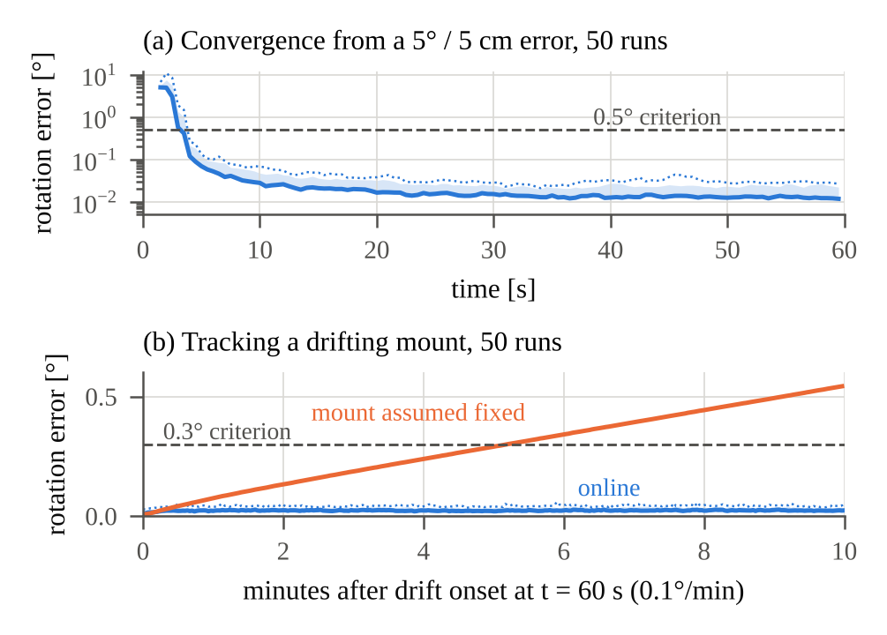
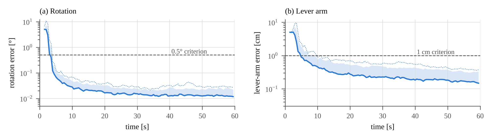
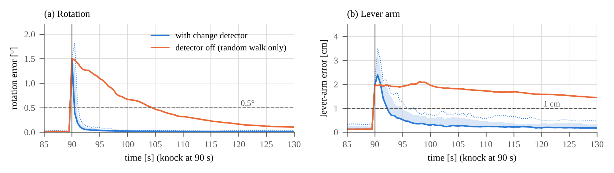

Visual–inertial systems need the rigid transform between camera and IMU: three rotation and three lever-arm parameters. The aim here is a calibrator that runs while the rig operates, follows slow drift, recovers from sudden changes, and reports whether its estimate is good enough to use.
The 28 error states are the IMU pose, velocity and biases, the extrinsic, the time offset, and a clone of the previous frame’s pose. The filter is adapted from the author’s Aether6 navigation filter, whose numerics, IMU noise models and Monte Carlo harness it reuses. At each 20 Hz stereo frame, every point seen in the previous and the current frame is triangulated and marginalised by projecting its eight pixel residuals onto the left null space of its Jacobian, leaving five that depend only on the state. The analytic Jacobians, checked numerically, include the time offset. A per-point χ² gate rejects wrong matches, and about 500 rows are QR-compressed to 28 before a Joseph-form update.
The extrinsic follows a random walk, so a drifting mount is followed rather than treated as fixed. Once the calibration has converged, a knock shows up as corrections that keep pushing one way: over 2 s, their sum is tested against its predicted covariance (statistic > 40, against χ²6). On detection the extrinsic covariance is re-opened to 2° / 2 cm, and the navigation states are loosened too, since they absorbed part of the knock before it was detected.
Projected off every state direction, the residual is pure pixel noise, so a robust estimate of its level, taken before the gate, rescales the noise model. A status function reports 2σ bounds along the least-certain directions, declares convergence when both are inside 0.5° / 1 cm, and names the rotation that would observe a poorly observed direction.
Each run draws its own scene, true mount, IMU biases, noise and direction of the 5° / 5 cm starting error; the estimator receives only that starting value (Table 1, Fig. 1).
| Scenario (target) | Result |
|---|---|
| Converge from 5° / 5 cm (< 0.5°, < 1 cm in 60 s, ≥ 95 % of runs) | 50 / 50; p95 at 60 s 0.025° / 0.34 cm |
| Drift 0.1°/min for 10 min (error < 0.3°) | 50 / 50, worst 0.061°; mount assumed fixed: 0.55° |
| Knock, 1.5° / 2 cm | detected 0.25 s, in tolerance 2.6 s (p50) |
| 8 ms clock offset; 5 % wrong matches; 2× pixel noise | 50 / 50 converge in each |

In 200 runs on a still mount (nominal, clock offset, wrong matches, 2× noise) and through the drift, the status never said converged with the true error outside 0.5° / 1 cm. It certified about 10 s after the truth got inside (36 s with 2× noise). The change detector raised no false alarm in 200 runs (11.7 h of data).
The data are simulated: an ideal pinhole stereo pair, given correspondences and known IMU noise. The motion matters: with a fifth of the roll and pitch and half the yaw, the lever arm reaches 1 cm in only 34 / 50 runs (median 50 s), and the status, correctly, certifies none. The covariance is conservative (NEES 1.9 against 6), which the 2σ status relies on; a short sliding window of poses would make it consistent and add information under gentle motion. Validation on recorded data is next.


A false claim is a frame on which the status says converged while the true error is outside 0.5° / 1 cm. The 2σ bounds are filter sigmas, not guarantees; the true error exceeded them on 0–0.04 % of the converged frames on a still mount and on 1.3 % during the drift.
| Scenario | Converged | Status says converged | Status certified (p50) | Truth inside (p50) | False claims |
|---|---|---|---|---|---|
| Nominal, clock offset, wrong matches | 150 / 150 | 150 / 150 | 16.3–17.0 s | 6.0–6.4 s | 0 |
| Pixel noise 2× configured, estimated | 50 / 50 | 50 / 50 | 45.6 s | 8.1 s | 0 |
| Drift, 10 min at 0.1°/min | 50 / 50 | 50 / 50 | 16.3 s | 6.0 s | 0 |
| Yaw-only motion | 5 / 50 | 0 / 50 | – | – | 0 |
| Knock (all before detection) | 50 / 50 | 50 / 50 | 16.3 s | 6.0 s | 253 |
| Noise estimation off (model wrong) | 33 / 50 | 49 / 50 | 22.8 s | 29.3 s (33 runs) | 15 166 |
| Clock offset ignored (model wrong) | 21 / 50 | 0 / 50 | – | – | 455 |
| Change | Result |
|---|---|
| Gentler motion: a fifth of the roll and pitch, half the yaw | 34 / 50 converge (median 50 s; lever arm 0.88 cm p50 at 60 s); the status certifies none, 0 false claims |
| Pixel noise configured 10× too low or too high, with or without 5 % wrong matches | 50 / 50 converge in all four, unchanged accuracy, 0 false claims; noise estimated as 0.491–0.513 px (10× is the limit of the estimate’s range) |
| Status at 3σ instead of 2σ | certifies at 34.1 s instead of 16.3 s; never within 60 s with 2× noise |
| Each observation used once (disjoint frame pairs) | NEES 5.3 (near consistent) but twice the error; the 2σ status makes 240 false claims |
| 5° / 5 cm knock | back in tolerance after 3.6 s (p50); 75 false claims, all before detection |
Estimator and simulator (C++17, Eigen). Adapted from Aether6: its 18-state navigation filter became the 28-state calibrator. Reused from Aether6: rotation algebra, discretisation, the error-state filter numerics (Joseph-form update, multiplicative attitude reset), IMU white-noise and bias random-walk models, and the deterministic multi-threaded Monte Carlo harness. New: a stereo camera with a landmark scene and a true mount that drifts or is knocked; a scripted figure-eight trajectory with roll, pitch and yaw excitation; the reprojection model with analytic Jacobians; the change detector, noise estimate and status; and the scenarios. No ROS.
Verification. 117 Catch2 test cases: Jacobians against central differences, a
noise-free run that must stay at the truth, propagation order of accuracy, bit-for-bit
reproducibility from a seed, and end-to-end scenario checks. CI builds with GCC and Clang
(Release, warnings as errors) and runs a Debug subset with Eigen’s assertions on. GCC and
Clang (both with libstdc++) produce identical runs. make eval regenerates every
Monte Carlo result here, and docs/writeup/make_figures.py the figures; the
development history in Appendix D is documented in docs/method.md.